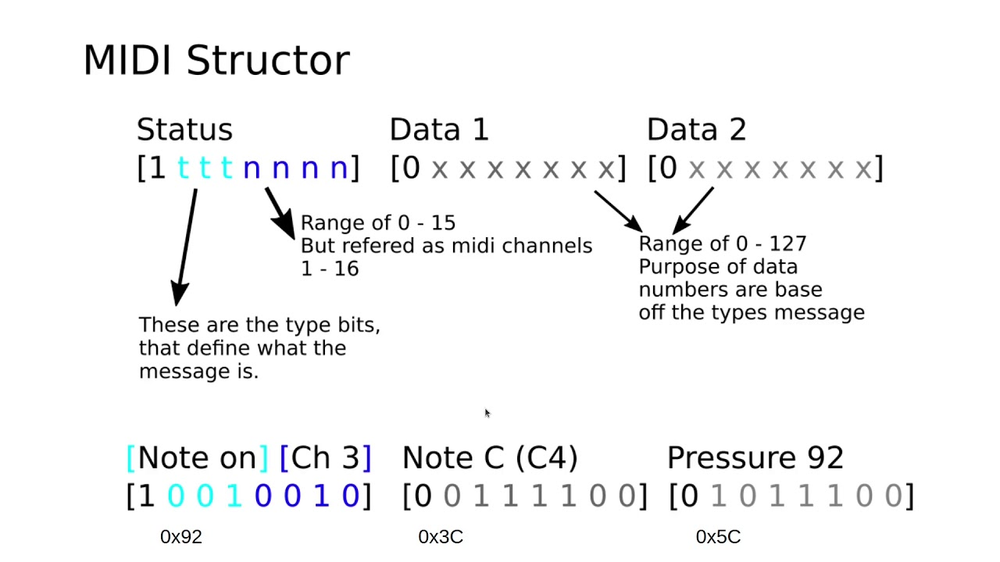

MIDI Controller Simsiroglu
MIDI Controller Simsiroglu
Autores: Camila Simsiroglu.
Colaboradores: Julián Ghiglieri.
Año: 2022–2025.
Descripción breve
Dispositivo de control musical diseñado como interfaz física para la exploración y manipulación de procesos sonoros en tiempo real. El proyecto investiga la integración entre electrónica, diseño de objetos e interacción tangible, proponiendo un vínculo directo entre el gesto físico y la generación sonora. Su desarrollo combinó diseño industrial, fabricación digital y electrónica personalizada para crear una herramienta performática orientada a la experimentación musical.
Indice
Contexto
Gracias al alentamiento de mis padres, tuve contacto con instrumentos como el piano y el bajo desde una edad temprana. Mi objetivo era mejorar la técnica imitando canciones, principalmente de The Beatles. A los 8 años, desistí de las clases, pero las bases quedaron.
Durante la pandemia, a los 21 años y al concluir mi carrera en Dirección de Arte Publicitario, decidí explorar la producción musical. Descubrí que todo lo aprendido en mi infancia estaba ahí esperando resonar nuevamente, filtrado por la madurez. Con la privacidad que me otorgó el encierro me dediqué a improvisar, descubriendo mi propio sonido y animándome a probar nuevas ideas. Sin desmotivarme por mi falta de técnica, sino asombrandome por mi memoria musical y muscular. Esta característica ha perdurado; cada vez que encuentro un nuevo instrumento, surge en mí una curiosidad indomable por explorar la relación que puedo tener con él y descubrir qué sonidos puede producir.
Posteriormente, me inscribí en un máster de Innovación Audiovisual y Espacios Interactivos en Barcelona, donde tuve una introducción a temáticas artísticas como electrónica, fabricación digital y Arduino. Mis conocimientos musicales resultaron valiosos en tareas grupales, desempeñándome como artista sonora en instalaciones. Fue ahí cuando descubrí mi pasión por los sintetizadores y controladores, viendo en el sistema MIDI un equilibrio perfecto para la interacción digital y la recuperación de la faceta táctil de los instrumentos.
Tras finalizar el máster y regresar a Argentina, me propuse construir mi propio controlador MIDI, aplicando conocimientos de fabricación digital en metal, resina, PLA, corte láser y CNC.
Este proyecto nace de una profunda apreciación por instrumentos musicales en términos sonoros y visuales. Desde pequeña sentí admiración por aquellos objetos capaces de generar momentos en el tiempo que producen una intensa emoción. El controlador MIDI fue una forma de acercarme a la tradición de la luthería desde los lenguajes contemporáneos de la electrónica, el diseño y la fabricación digital.
MIDI? explicado con mis palabras
Un controlador MIDI es una interfaz que puede ser fisica o digital y permite vincular sistemas que hablan hablan este idioma; protocolo MIDI. Muchas veces es confundido con un sintetizador, pero a diferencia de un sintetizador que trabaja con voltaje para generar sonidos, un MIDI trabaja con 1 y 0, generando patrones diferenciales que indican cuando algo sucede o no sucede. De esta manera, un MIDI no tiene sonidos, sino que tiene indicaciones, sí o no, apagado o prendido, 1 o 0. Estas instrucciones indican qué debe suceder, por ejemplo qué nota tocar, cuándo hacerlo o qué parámetro modificar.

La mayoria de las aplicaciones MIDI son sistemas de audio, porque nos permite trabajar similarmente a un teclado musical.
Pero decir que el MIDI es un controlador de audio es restrictivo, porque se puede usar con varias aplicaciones y aqui esta su efecto comodín. Su premisa modular. Cualquier acción puede asignarse a un botón, una perilla o una tecla siempre que el sistema receptor interprete el protocolo. Por ejemplo, un botón puede activar un efecto de reverb en Ableton Live, cambiar un instrumento virtual o disparar una secuencia previamente programada. Las posibilidades que ofrece son infinitas.
Por otro lado y como mencionaba antes, existe la funcion de teclado musical. Un MIDI conectado a una fuente de alimentación por sí solo no genera sonidos, aún teniendo un teclado integrado (existen, sin embargo, sintetizadores con función de MIDI agregada). Estos controladores están preparados para funcionar como un sintetizador pero, en vez de venir con un sonido prediseñado o modificable, nos da la libertad de elegir y crear un sonido y asignárselo a nuestro controlador. Un sonido que nunca sucederia si no hubiera un MIDI activandolo.
La flexibilidad que ofrece el sistema -pensé- no solo se encuentra en aquello que el MIDI controla, sino también en la arquitectura del MIDI. Ahí fue que decidí hacer el mío. Esa decisión coincidía con el interés que comenzaba a surgir en mí por la luthería y por la relación entre la estética de un instrumento y su funcionalidad.
Diseño & Desarrollo
Criterios de diseño
El diseño del controlador MIDI siempre estuvo vinculado con su funcionalidad, y viceversa. Desde el comienzo prioricé la estética del objeto como su principal diferencial, combinándola con componentes electrónicos que consideraba apropiados para esa búsqueda visual y material.
Elegí utilizar una pantalla LCD Nokia de baja resolución, que limitaba la información a textos pequeños o imágenes simplificadas, casi simbólicas. También realicé una búsqueda extensa de botones pulsadores que coincidieran con la estética que quería construir. Una vez tomada esa decisión, la elección de los componentes no volvió a modificarse: el diseño de la carcasa y de la electrónica tuvo que adaptarse a ellos.
Decidí instalarme firmemente en esos componentes y "work my way around them".


Prototipos
En paralelo al desarrollo del controlador, me encontraba explorando distintas técnicas de fabricación digital. Venía trabajando con impresión 3D en PLA y con resina fundible para producir piezas metálicas mediante fundición, principalmente en el contexto de la joyería.
La pieza central del controlador —la estrella o "copo de nieve"— superaba ampliamente las dimensiones con las que trabajaban los talleres de fundición que utilizaba habitualmente. Esa limitación me llevó a buscar otro tipo de proveedores y realizar un primer prototipo en bronce junto a un taller especializado en escultura de gran formato.
Si bien esa versión permitió validar la pieza, durante el desarrollo del proyecto decidí replantear el proceso constructivo. La estrella pasó a fabricarse en resina fundible, conservando el acabado y el nivel de detalle que buscaba, mientras que la estructura que la rodea se resolvió mediante impresión 3D en PLA.
La versión presentada corresponde a esta última iteración. Si bien el proyecto continúa abierto a futuras mejoras en materiales y terminaciones, esta configuración permitió materializar el controlador respetando tanto los criterios estéticos como las posibilidades técnicas disponibles durante su desarrollo.
Funcionalidad
Desde el comienzo tenía muy claro cómo quería que funcionara el controlador. El instrumento debía contar con ocho notas asignables (Do–Re–Mi–Fa–Sol–La–Si–Do) y cuatro botones de control (toggles) completamente mapeables.
Cada uno de estos toggles activa una animación pixelada en la pantalla LCD Nokia. Diseñé cuatro pequeñas escenas de cuatro cuadros cada una: un caballo galopando, un río fluyendo, unas nubes desplazándose y un sol brillando. Cuando un botón se encuentra activo, la animación correspondiente cobra vida; cuando se desactiva, permanece estática. Debajo de ellas se muestran, en cifrado americano (C D E F G A B C), las notas asignadas a cada botón.
Uno de los desafíos del diseño fue que, al priorizar la estética del controlador, la disposición de las notas dejó de responder a la ergonomía tradicional de un teclado. Para compensarlo, incorporé un sistema de escalas predefinidas que permite que las ocho notas pertenezcan siempre a una misma tonalidad. De esta manera, cualquier combinación de botones produce resultados armónicos.
Las escalas pueden alternarse mediante dos botones ubicados en el lateral derecho del controlador. Cada una está asociada a un color, indicado mediante un LED RGB central, mientras que la pantalla actualiza automáticamente las notas correspondientes.
En el lateral izquierdo se incorporaron dos botones destinados a la transposición. Una pulsación breve permite subir o bajar semitonos, mientras que una pulsación prolongada modifica la octava completa. El color del LED RGB indica visualmente la octava en la que se encuentra el instrumento.
Desarrollo electrónico
Hasta ese momento mis conocimientos de electrónica y programación eran todavía limitados. Había realizado un curso introductorio de Arduino y logrado desarrollar pequeños prototipos funcionales, pero integrar todos los componentes en un único dispositivo superaba las herramientas que tenía en ese momento.
Indagando y preguntando, conversando con colegas e intercambiando ideas, logre que me recomendaran a la persona indicada para llevar el proyecto a su recta final: Julian Ghiglieri, desarrollador de firmware y hardware electrónico especializado en sistemas embebidos para aplicaciones de audio, síntesis musical e interfaces entre lo digital y lo analógico. Su trabajo, desarrollado bajo el sello Loopea, combina el diseño de placas de circuito impreso (PCB) en KiCad con el desarrollo de firmware para microcontroladores.
Le presenté el proyecto y lo comisioné para desarrollar la electrónica, el firmware y la PCB del controlador a partir de un funcionamiento y una identidad visual que ya estaban definidos.
Durante meses trabajamos de manera conjunta. Mientras Julián resolvía la implementación técnica del sistema, yo acompañaba cada etapa del desarrollo, probando prototipos, validando decisiones y aprendiendo del proceso. Me interesaba comprender cómo cada una de las ideas que había imaginado se traducía en circuitos, componentes y líneas de código.
Fueron incontables los encuentros de sentarnos a trabajar, debuggear, testear, iterar y sacar adelante el controlador. Para mi sorpresa, descubrí que estaba mucho más cerca de entender la electrónica de lo que imaginaba. De repente, este mundo desconocido empezaba a achicarse justo cuando yo me rendía pensando que era infinito y que jamás iba a terminar de recorrerlo. La colaboración con Julián no solo permitió concretar el controlador, sino que también marcó el comienzo de un aprendizaje que más tarde continuaría profundizando en proyectos posteriores.
Performance
Esta sección es importantísima.
Si tenés videos de la presentación octofónica, los pondría antes que los esquemáticos.
Para un jurado de artes visuales o sonoras, suele ser más potente ver la obra funcionando que ver la electrónica.
Podrías incluir:
- video completo o fragmento,
- fotos de la presentación,
- descripción del sistema octofónico,
- rol del controlador durante la performance.
Documentación
Al final agregaría:
- galería de imágenes,
- videos,
- renders,
- PDF del circuito,
- capturas de KiCad,
- GitHub (si existe),
- archivos de fabricación (si querés compartirlos).
Para una postulación artística, lo más valioso suele ser mostrar la relación entre investigación, desarrollo tecnológico y resultado performático. El hecho de que tengas renders, PCB, documentación técnica y además evidencia de una presentación octofónica le da mucha más fuerza como proyecto artístico-tecnológico que como simple controlador MIDI.